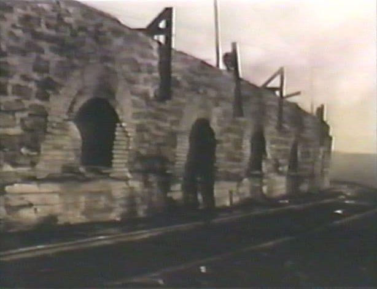
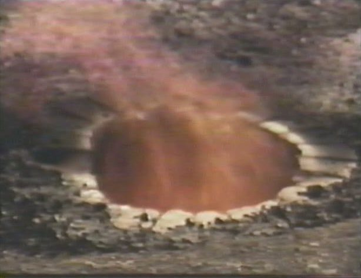
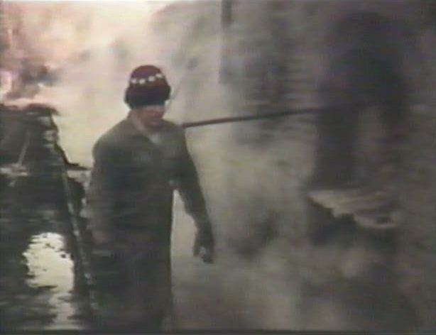
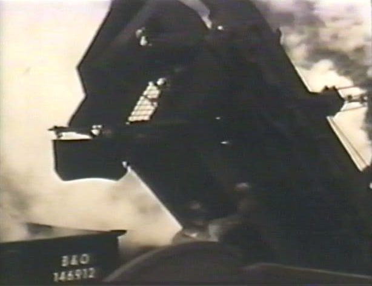
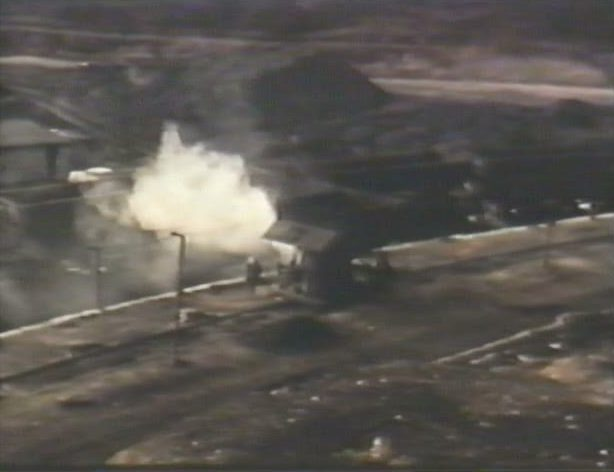
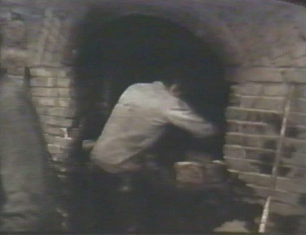

Coke Making in Beehive Ovens
A National Park Service film, shot at Bretz, West Virginia, in 1973
In 1973 a National Park Service film crew spent time on a working coke yard at Bretz, West Virginia, in Preston County. Their film runs about 18 minutes, and it records beehive ovens worked, in most respects, as they had been since the plant started in 1906. Most of the talking is done by the men on the yard.
Watch the film at Rivers of Steel
The film opens in the Rivers of Steel archive in a new tab, and it runs 18:29.

Why it is here
This is not a film about HART's railroad or its coke works. The coke plants on Neville Island used by-product ovens, a later technology that captured the gases a beehive oven burns off. It is here because it is one of the clearest records we have seen of how coke was made, explained by the people who made it.
The film was made for the Historic American Engineering Record (HAER), a National Park Service program. Its opening narration explains why: films of surviving industrial processes preserve "the critical relationship between machines and those who use them."
What a beehive oven does
Coke is coal with the volatile gases and impurities driven off, leaving a hard, porous fuel high in carbon. By 1895 it was the main fuel for blast furnaces. The beehive, a domed oven of fire brick, did the job simply: coal burned with a limited supply of oxygen. As the steel industry grew, larger ovens near the furnaces replaced it, and the film says beehives ran by then only in periods of peak steel production.

One worker explains the point most visitors got wrong:
"They thought, well, maybe it starts at the bottom of the coal. No, it starts from the top and burns gradually down to the bottom."
The coal catches by itself when the oven is hot enough. If an oven has been watered too heavily it will not catch, and the coke burner has to take the door down and fire it up again. He says 16 ovens had failed to burn that way "the other day."
The work, in order
The film follows the cycle from the end of one burn to the start of the next.
Watering and pulling
When the coal has burned for several days the oven is opened and the coke is watered down before it comes out. The water boy's judgment matters, because too much water spoils the next burn.

Machines had replaced hand pulling at Bretz, and one man measures the change. He says the job now takes roughly 15 minutes an oven, though the transcript is unclear on exactly which step he means. By hand, with scrapers and bars, it took an hour to an hour and a half, and a good man averaged three ovens a shift.

The machine was already old. Few like it were still running, so parts were sometimes hard to get. The welders built worn gears back up, and some parts came off other machines.
Coal and the larry
Coal came mostly from strip jobs and less from deep mines, and it ran through a washer to take out dirt and impurities. A larry, a self-propelled charging car on rails above the ovens, then carried it along the row. (Our machine transcript hears "lorry"; larry is the usual term.) The larry operator compares it to a streetcar: an electric motor taking power through a pole and a brass trolley connector from a trolley wire, fed by the plant's own powerhouse. The motor and wheels, he understood, dated from the Bethlehem Steel years.

Charging
At each oven a chute is set and the coal runs down it into the oven. How much goes in depends on the day of the week. Monday and Tuesday ovens got a 72-hour charge. Thursday and Friday ovens got a four-day charge, burned through the weekend and were pulled early Monday.
Wet coal, the operator says, goes in better and ignites a little slower than dry. He is also plain about the job:
"Boy, I tell you, after you leave here of the night, you spit that black stuff in your lungs..."
Leveling, bricking and burning
Once the oven is charged, the door is partly bricked up and the coal is carefully leveled, pushed all the way around to the brick so the burn is even.

One man names "the three important men on the yard": the water boy, who waters the ovens out; the leveler, who evens the charge; and the coke burner. The coke burner controls the air. He reads the blaze at the door and uses a bucket of mud to close the opening a little at a time, which keeps the fire from burning hard. Too much air burns the coke away to ash and leaves the rest soft. He compares it to a stove in a house: if you do not control the air, it will not burn right.
"There's some bad ovens. There's some good ovens."
A bad oven, he says, needs its air taken up closer than a good one.
The coal mattered too. He says Freeport and Bakerstown coal burn well and Pittsburgh coal does not. That is a surprise, since the Pittsburgh seam fed the famous Connellsville coke region, so he may mean the coal to be had locally.
The men
The film closes on the coke burner's own story. He has been on the yard since he was a boy, helping his father, and he left school as soon as he could. He worked for other coke companies, including one in Uniontown, before coming to Bretz. His brothers had gone to the city and wanted him to follow. He stayed:
"This is my line of work and I like to work, you know, burning coke in the outdoor work. In a factory it's different."
About the film
- Title
- Coke Making in Beehive Ovens, "an industrial process documented by the Historic American Engineering Record." The online copy is labeled "Elkins Coal and Coke Company 1975." Elkins Coal and Coke acquired Bretz in 1906; the film's own credits name Mercury Coal and Coke and give 1973.
- Series
- Part of a series on coke making held by the Iron and Steel Heritage Forum, a special interest group of the Society for Industrial Archeology.
- Filmed
- Mercury Coal and Coke Co., Bretz, W.Va., 1973
- Produced by
- Motion Picture Production Unit of the National Park Service, Department of the Interior, in cooperation with the State of West Virginia and the Office of Archeology and Historic Preservation
- Director
- Joseph Gyovai
- Editor
- Tom Kleiman
- Photography
- Tom Gray
- Sound
- Blair Hubbard
- Historic American Engineering Record
- Douglas L. Griffin, Chief; Donald E. Sacheim and Dennis M. Zembala, Historians
As a National Park Service production, the film is understood to be in the public domain in the United States. Thanks to Rivers of Steel, which keeps the copy linked here. For more on the coke-making series, see the Iron and Steel Heritage Forum's group page; its files are open to group members. HAER's photographs and notes on the site are at the Library of Congress. The film's quotes on this page come from a machine transcript checked by reading, so treat them as close rather than exact.